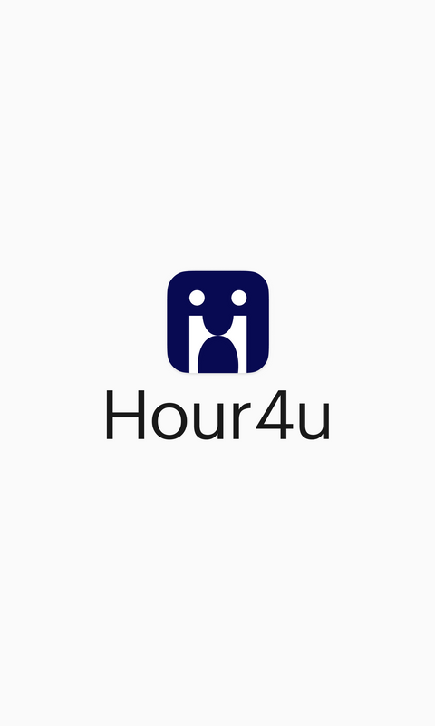

<ion-content class="b-color" style="--background: #fafafa !important;
background: #fafafa !important;">
  <div class="data-not-found-wrap" *ngIf="isWeb">
    <div class="center-card-wrap">
      <div class="pb-0">
        <ion-row>
          <ion-col size="12">
            
          </ion-col>
        </ion-row>
      </div>
    </div>
  </div>
</ion-content>